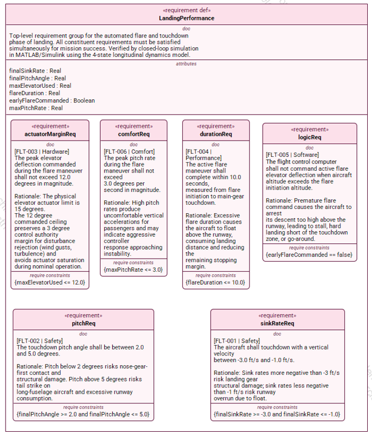
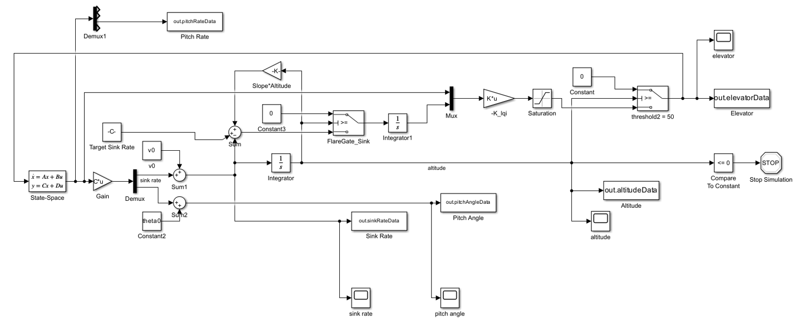
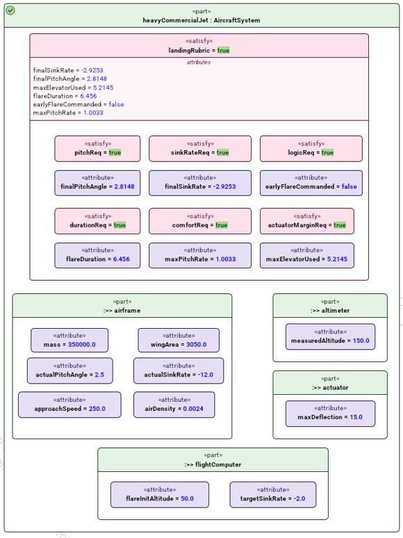
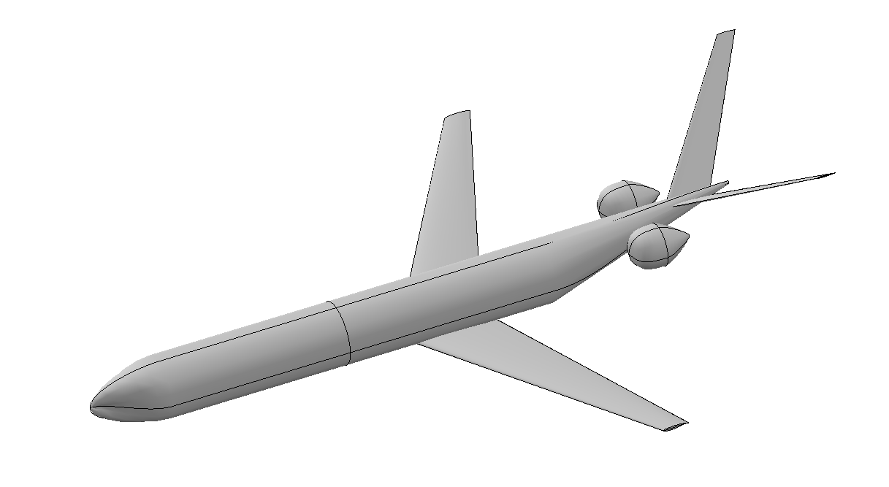
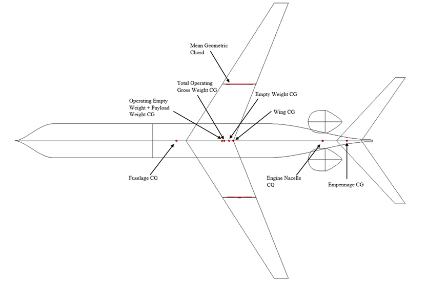
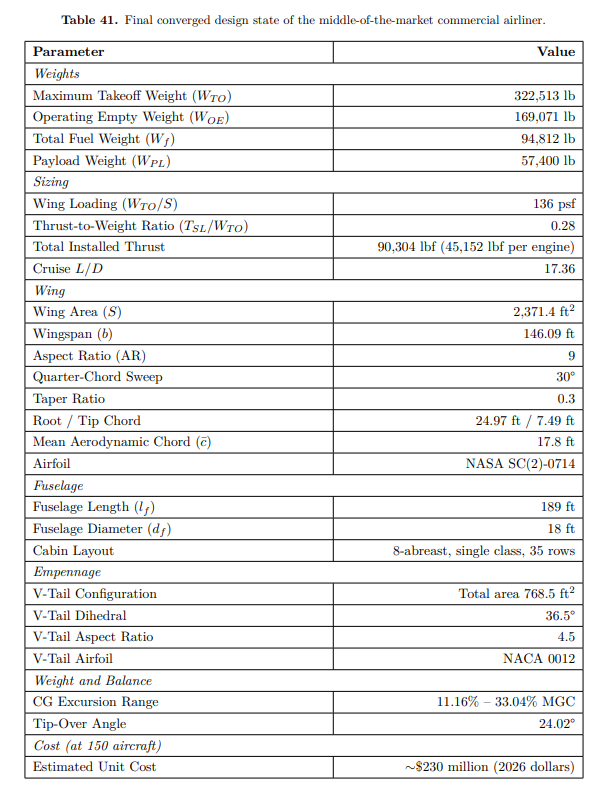

Aerospace Systems Design Laboratory · Georgia Tech · 2026
Automated MBSE Model of a Simplified Aircraft Landing Flare Control System
I defined this research project and set its requirements, then built the system as an executable SysML v2 model in CATIA Magic, holding requirements, architecture, and behavior in one place. Linking the model to MATLAB/Simulink means one click runs the closed-loop simulation and resolves each of the six touchdown requirements true or false. I ran it across aircraft spanning a 140:1 mass range, with failures flagged automatically.
- SysML v2
- CATIA Magic
- MATLAB
- Simulink
- MBSE

Requirements view

Simulink model

Verification results
PDF preview is unavailable on small screens. Use Open fullscreen or Download above.
PDF preview is unavailable on small screens. Use Open fullscreen or Download above.
AE 4311 Senior Aircraft Design I · Spring 2026
Conceptual Design of a Middle-of-the-Market Airliner
A complete conceptual design cycle, following Roskam's methodology, for a 280-passenger, Mach 0.80 twin-turbofan airliner with a 3,500 nm design range, certified to FAR Part 25. I worked the problem end to end on my own: restructuring the mission specification into a requirements hierarchy, down-selecting among three configurations with a weighted Pugh matrix, and converging weight and constraint sizing across six flight conditions.
From there: cost estimation across production quantities, airfoil down-select from four candidates using XFLR5 lift curves and drag polars, 3D wing design and induced-drag analysis in AVL, fuselage and tail sizing in OpenVSP, and a full weight-and-balance study with CG envelope and landing gear placement. The converged design is documented in a 60-page technical report.
- AVL
- OpenVSP
- XFLR5
- Excel / VBA
- Roskam method
- Trade studies

Final configuration

Top view, CG locations

Converged design values
PDF preview is unavailable on small screens. Use Open fullscreen or Download above.
Additional projects
Other Work
Computational Fluid Dynamics
Undergraduate CFD research and coursework in ANSYS and Fluent. Modeled 3-D flow over an ONERA M6 wing in subsonic and transonic regimes, matching integrated lift and drag coefficients within 5% of test data. Induced normal shocks at three locations in a conical nozzle on a refined Pointwise grid, landing within 5% of hand calculations. Also studied non-Newtonian arterial flow and a vertical-axis wind turbine.